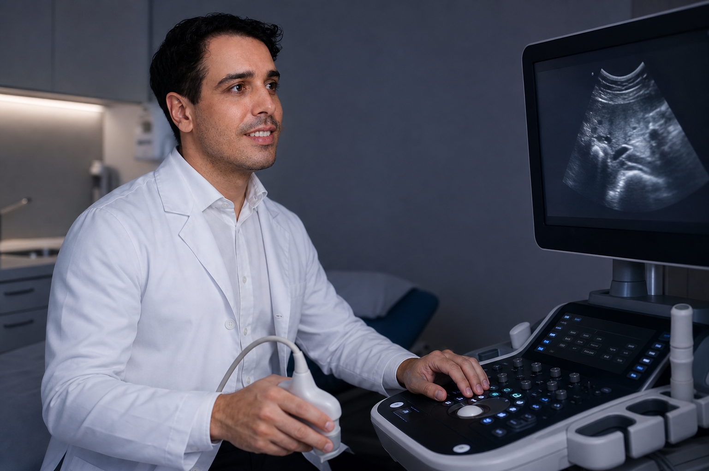

O que é o ultrassom transvaginal?
É um exame de imagem que usa um transdutor inserido no canal vaginal pra avaliar útero, endométrio, ovários e trompas de perto, com mais nitidez do que o ultrassom feito só pela barriga (via abdominal).
Para que ele é usado?
Serve pra investigar irregularidades menstruais, dor pélvica, suspeita de miomas, cistos ovarianos e endometriose, além de confirmar gravidez inicial e acompanhar tratamentos de fertilidade. Também é usado dentro da rotina ginecológica preventiva, não só quando há sintoma.
O exame dói?
Não deveria doer — pode causar um desconforto leve e passageiro, principalmente se houver sensibilidade pélvica no momento do exame. Qualquer relato de dor deve ser conversado com o profissional que está realizando o ultrassom.
Precisa de algum preparo antes?
Ao contrário do ultrassom pélvico abdominal (que geralmente exige bexiga cheia), o ultrassom transvaginal costuma ser feito com a bexiga vazia. A orientação exata de preparo deve ser confirmada no agendamento, já que pode variar conforme o motivo do exame.
Ultrassom transvaginal é a mesma coisa que ultrassom ginecológico?
"Ultrassom ginecológico" é o termo mais amplo — pode ser feito por via transvaginal ou abdominal, dependendo do caso e da idade da paciente. A via transvaginal costuma dar imagens mais detalhadas em pacientes que já tiveram atividade sexual, mas a escolha da via é sempre uma decisão médica.
Fontes: FEBRASGO.
Deseja agendar uma consulta ou pré-natal com a nossa equipe?
Atendimento humanizado, tempo dedicado em consulta e agendamento rápido sem fila.
FALAR NO WHATSAPP COM A EQUIPE →